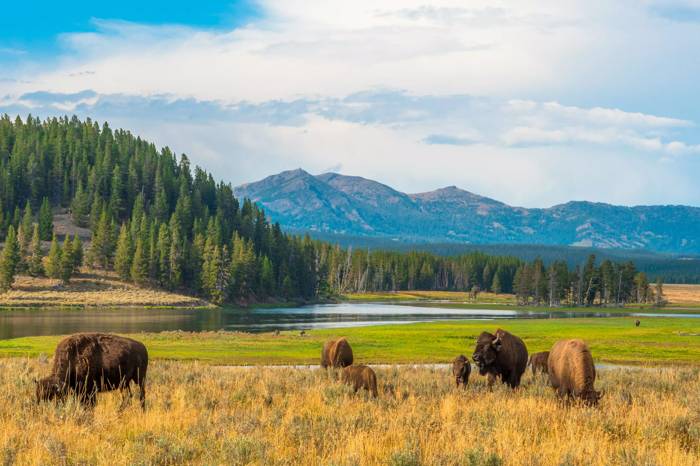

Home
Map
Dashboard
About Us
Resources
Resources
National Park Service dataset on Kaggle
- Created 2016
Biodiversity EDA sample project using NPS dataset
-Created 2017
National Parks Conservation Association and Defenders of Wildlife: Report on the Endangered Species Act
- Published 2019
OneVet Special Reports Team: Endangered Animals in the US
- Published 2024
Educational: Leave No Trace
- Published 2023
Blog post: National Parks Maps
- Published 2023
AAA Travel: National Parks Overview
- Updated 2024
Blog post: Best Months to Visit Each National Park
- Updated 2024
This website was created in August, 2024.
